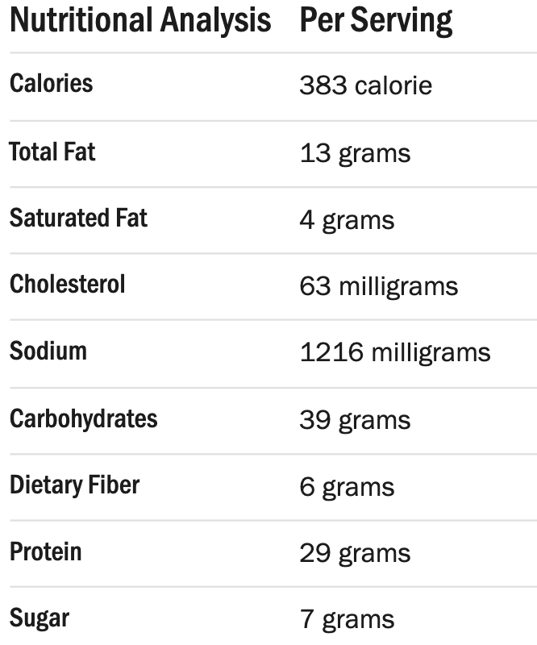

Enchiladas

Time: 45 minutes
Servings: 4-8 people
Description
Easy chicken enchiladas are a perfect weeknight dinner! Stuffed with cheese, pulled chicken, black beans and corn, smothered in a zesty red sauce, and baked until warm and crisp, the Mexican-inspired dish is delicious alongside tortilla chips, salsa, guacamole and rice. Add your favorite toppings and enjoy the best chicken enchilada recipe ever -- with minimal effort!
Ingredients
- 2 tablespoons extra virgin olive oil or other cooking oil
- 12 corn tortillas
- 1/2 onion, chopped (about 3/4 cup)
- 1 clove garlic, minced (about 1 teaspoon)
- 1 (14-ounce can) crushed tomatoes, preferably fire roasted
- 3/4 cup chopped cooked green chiles
- 1/2 cup water
- 1/2 teaspoon dried oregano
- 1 pound (4 cups) jack cheese, mild cheddar , or a mix, grated
- 1 cup sour cream
- Handful cilantro
Steps
- Coat large saute pan with oil. Season chicken with salt and pepper. Brown chicken over medium heat, allow 7 minutes each side or until no longer pink. Sprinkle chicken with cumin, garlic powder and Mexican spices before turning. Remove chicken to a platter, allow to cool.
- Saute onion and garlic in chicken drippings until tender. Add corn and chiles. Stir well to combine. Add canned tomatoes, saute 1 minute.
-
Pull chicken breasts apart by hand into shredded strips. Add shredded chicken to saute pan, combine with vegetables. Dust the mixture with flour to help set.
-
Microwave tortillas on high for 30 seconds. This softens them and makes them more pliable. Coat the bottom of 2 (13 by 9-inch) pans with a ladle of enchilada sauce. Using a large shallow bowl, dip each tortilla in enchilada sauce to lightly coat. Spoon 1/4 cup chicken mixture in each tortilla. Fold over filling, place 8 enchiladas in each pan with seam side down. Top with remaining enchilada sauce and cheese.
-
Bake for 15 minutes in a preheated 350 degree F oven until cheese melts. Garnish with cilantro, scallion, sour cream and chopped tomatoes before serving. Serve with Spanish rice and beans.
Nutrition Facts

Back to home